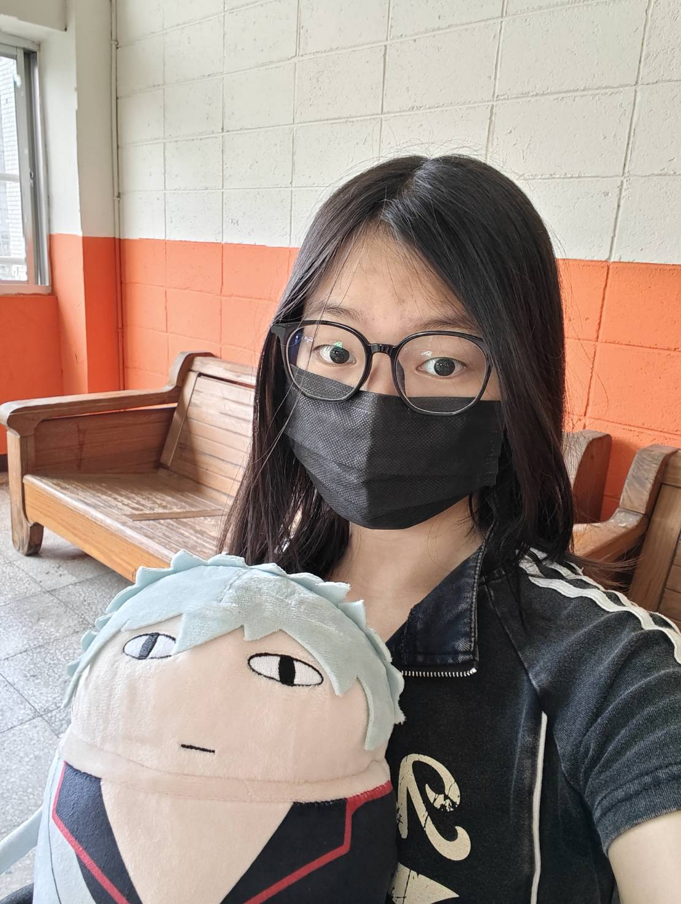

你好，我是 趙羿涵
目前就讀於國立臺北科技大學電子工程系大一。熱愛演算法思維與軟硬體實作，具備優秀的程式邏輯能力。曾擔任中山女高資訊研究社教學組組長，並多次在校內資訊能力競賽中獲得一等獎等殊榮。現正積極修習電資核心領域，累積豐富的實作專案與微課程學術底蘊。
關於我 About Me

學術探索與程式熱忱
你好！我是趙羿涵，現就讀於國立臺北科技大學電子工程學系。從高中時期在中山女高資訊研究社擔任教學組組長起，我就對計算機科學與數位系統設計產生了濃厚的興趣。
在學習上，我熱愛演算法思維與軟硬體整合實作。我追求學術卓越，大一在學期間取得了 GPA 3.89/4.0 的優異成績，於系所排名 12/100。
除了專業課業，我也積極參與大專院校微課程（如台大電機、師大電機與資工相關主題課程）與學術活動，在多元探索中不斷拓寬專業視野，並期待未來能發揮所學，投入跨領域的科技研發與專案開發。
教育背景 Education
國立臺北科技大學 (NTUT)
電子系大一在學電子工程學系大一 (Electronic Engineering)
- 學業成績優良，累計 GPA 3.89 / 4.0，全系所累計排名 12 / 100。
- 在大一期間榮獲國立臺北科技大學極具聲譽之 三育獎 (2026/05) 表彰。
- 專注於基本電學、數位邏輯設計、物理實驗等電機電子核心學門與實作。
臺北市立中山女子高級中學
高中畢業數理資訊背景與社團幹部
- 高中時期展現卓越資訊天賦，多次代表學校參與校外電資研習。
- 積極參與程式設計競賽，連續三年勇奪校內資訊能力競賽一等獎、二等獎與三等獎。
- 擔任 資訊研究社教學組組長，主導程式語言（C/C++）大綱設計與教學。
經歷與專案 Experiences & Projects
電子工程軟硬體專案實作
軟硬體整合實作 | 2025.09 - 至今
在大一期間積極投入電機電子領域學習。結合基本電學與數位邏輯，利用 Verilog 設計並實現加法器硬體電路，並在 FPGA 開發板上完成驗證；同時結合 Arduino 開發板、感測器及電子元件，獨立設計完成數位電子琴專案，具備優秀的軟硬體協同開發與調錯能力。
演算法思維與程式競技
程式設計與運算思維 | 2023.09 - 2025.06
深耕 C/C++ 程式設計與演算法，在大專程式設計先修檢測 (APCS) 中獲得觀念 4 級分與實作 3 級分的頂尖成績。高中期間連續三年勇奪校內資訊能力競賽一等獎、二等獎與三等獎，展現卓越的邏輯思維、實作效率與程式除錯能力。
中山女子高級中學資訊研究社 教學組組長
社團領導與教學傳承 | 2024.07 – 2025.06
- 負責規劃與執行社團教學課程：主導並規劃年度教學大綱，引導全體社員高效率且有系統地掌握 C/C++ 程式設計與計算機科學核心概念。
- 製作高品質教材與實作講義：獨立設計數十套教學簡報、程式習題與動態上機實作教材，顯著提升課堂品質與社員程式自主開發成效。
榮譽、獲獎與專業檢定 Awards & Credentials
國立臺北科技大學 三育獎
2026 / 05
表彰在大一學年德、智、體、群、美等學科領域全方位且卓越之學術及綜合素質表現。
APCS 觀念4級分 / 實作3級分
2024 / 04
於大學程式設計先修檢測 (APCS) 中取得頂尖評級，充分認證優秀的演算法思維與實作力。
TOEIC 多益英語測驗 780分
2025 / 02
取得多益 780分優異成績，具備流暢無礙的學術英文文獻閱讀、學術交流與國際化科研能力。
中山女高校內資訊能力競賽 一等獎
2024 / 10
於高三校內資訊能力賽中，以優異的演算法解題與問題分析能力，勇奪第一名一等獎。
中山女高校內資訊能力競賽 二等獎
2023 / 09
在高二校內競賽中表現卓越，於限時演算法編程與邏輯推理賽題中獲得二等獎殊榮。
中山女高校內資訊能力競賽 三等獎
2022 / 09
高一入學即展現卓越的程式設計邏輯與天賦，勇奪校內資訊能力賽三等獎獎項。
學術活動與工作坊 Academic Activities
積極參與各領域頂尖學術機構、大專院校微課程與工作坊，奠定扎實的資訊、AI 與硬體設計底蘊。
鬥 code 少女冬令營
專為推廣資訊奧林匹亞舉辦之營隊。致力於提升資料結構與演算法的實作能力，與全台優秀女性程式精英深入切磋學習。
APCS C/C++ 程式設計課程
學習 C++ 進階語法與程式設計技巧，完成大量演算法與資料結構程式題目的編寫實作與高效除錯（Debugging）練習。
高中生 AI 工作坊
探索前沿人工智慧技術，系統性學習深度學習、GAN (生成對抗網路)、Diffusion Model (擴散模型) 與生成式 AI 的基本概念。
電資通領域微課程
開拓電機與通訊技術視野，並在實作課中利用 Arduino 順利製作出具備基本音階的簡易電子琴，探索感測與控制整合。
IC 設計簡介與實作微課程
接觸晶片積體電路設計的基本架構。學習 Verilog 硬體描述語言，並實際運用 FPGA 開發板動態實作出加法器電路。
館藏整理與讀者服務
熱心關懷與回饋。主動協助圖書館進行圖書館藏整理、書籍上架與多媒體資源管理工作，培養優異的細心度與服務素養。
修課表現 Academic Performance
大一第一學期修習電子工程核心必修與通識學科，憑藉優異表現取得極高學業評分：
物理實驗
涵蓋精密物理量測、電磁與光學實驗。在實驗設計、數據建模與報告撰寫上均獲最頂尖成績。
創業概論
研究商業模式設計、新創團隊運作與創投資金估算。期末新創企劃發表獲得評審高度讚賞。
基本電學與實習
研究 KVL/KCL、交流與直流電路分析、濾波器與共振電路實作。實習電路組裝除錯表現特優。
親密關係
探討人際互動心理學、溝通技巧、情緒智商與親密關係建立，培養高度的人文關懷與同理心。
數位邏輯設計
布林代數簡化、組合邏輯電路（多工器、解碼器）與序向邏輯電路（正反器、計數器）設計。
聯絡我 Contact Me
與我取得聯繫
我目前正積極參與大型語言模型與電資通領域的學術研究及實作專案。不論您是有研究合作的構想、學術專案的交流，或是社團活動的講座邀請，我都非常歡迎您的來信！